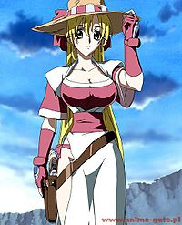

Grenadier
 De: La Frikipedia, la enciclopedia extremadamente seria.
De: La Frikipedia, la enciclopedia extremadamente seria.
| De la serie anime para todos:
|
| Grenadier
|
| 
|
| ¿Por que se estará riendo?
|
|
| Género:
|
Ecchi
|
| Episodios:
|
12
|
| Autor del manga:
|
Sōsuke Kaise
|
| Publicación:
|
Hace años
|
| Publicado en:
|
Una revista
|
| Director del anime:
|
Sōsuke Kaise
|
| Transmitido en:
|
Japòn
|
| Ovas:
|
Sì
|
| Películas:
|
No
|
| Notas
|
Interesante
|
Grenadier es un manga creado por un tío al que le molan los pechos grandes y las pistolas Sōsuke Kaise.
De que va grenadier?
La historia se basa en la vida de una zorra senshi de una talla 200 y su revolver de 6 balas, con la teoría de que no hace falta luchar, solo coger al rival y apretarlo contra sus pechos para dejarle sin ganas de ná.
Era una época de samurais, pero éstos abandonan sus espadas por armas de fuego porque son más seguras. Se hacen llamar senshis y no obedecen a ningún shogún ni yakuza. Estos senshis toman un castillo por las malas y expulsan a patadas al dueño. Este jura venganza.
El dueño contrata a un mercenario que lo único que hace es molar pero no mola, ya que es vencido por las armas. Así que huye y es rescatado (tantatatran) por la chavala, quien lo ayuda en su misión.
Si quieres mas informacion deja la flojera y ponte a ver la serie.
Personajes principales
Rushuna Tendo
La prota, inicia un viaje en busca de la guarra emperatríz que le enseñó todo lo que sabe.
Habilidades:
- Agarrar al rival y ahogarlo contra sus pechos.
- Disparar con un revolver al mismo tiempo que bailar.
- Sacar balas de su sujetador saltando...
- ...y recargar el revolver directamente.
Yajiro Kojima
Mercenario de gran reputación que acompaña a Rushuna en su viaje, está gilipollas tonto por que Rushuna le ofrece bañarse con ella mas d euna vez y no quiere.
- Habilidades:
- Ver como Rushuna los mata a todos desde un lugar alejado.
- Sacar su espada y decir su nombre, y le funciona al
cabrón chaval.
Mikan Kurenai
Una niña que se une con Rushuna y con Yajiro, proviniendo de un prostibulo.
- Habilidades:
Joder Fastidiar a Yajiro.- Inchar condones y hacer bonitas formas.
Personajes secundarios (pero importantes también)
- Habilidades:
- Sonreir a los arboles (guau ¬¬)
- Setsuna Omido: Una tía que gasta la misma talla y es tan buena como Rushuna.
- Habilidades:
Provocar mas excitación Agradar mas al público en un capítulo que Rushuna en toda la serie.- Manejar el revolver como Rushuna.
- Arlequín: Se llama así por que tiene pinta de payaso.
- Habilidades:
- Persuadir a los demás de que matar está bien.
- "La Iluminación del Diablo" Una pistola, que hace mucha pupa.
Guerreros celestiales
- Grenadier: Título que recibe la persona que le hace el amor a todos los guerreros celestiales antes que nadie.
- Touka Kurenai: Diosa de las prostitutas. Regenta un burdel. Lleva consigo un super consolador de 2 metros que todo lo que toca explota.
- Souma Sanzo: Lleva consigo un pianito de mierda que emite ultra sonidos que dan placer y desconcentra de la batalla al que lo oye.
- Teppa Aizen: Pervertido. Lleva una ¡¿Túnica!? de arma que no sirve para nada. Lo único útil que lleva este chico son fotos de tías.
- Fuuka Shirato: Otra
guarra guerrera celestial, baila y hace daño... Menuda mierda tontería de guerreros celestiales.
- Suirou: Sabe nadar
Curiosidades
- Rushuna rompe su sujetador en mas de una ocasión. Nunca se ve nada!
- Rushuma rompe sus bragas en una batalla.
- Setsuna esta mas buena que Rushuna.
- Amo el anime.
- Y tu tambien.
Autor(es):
- Veni Vidi Vici
- Kevrochi
- Harry El del Pote
- Molx
Frikipedia 2005-2016, Licencia
GFDL 1.2 - Extraído por FrikiLeaks